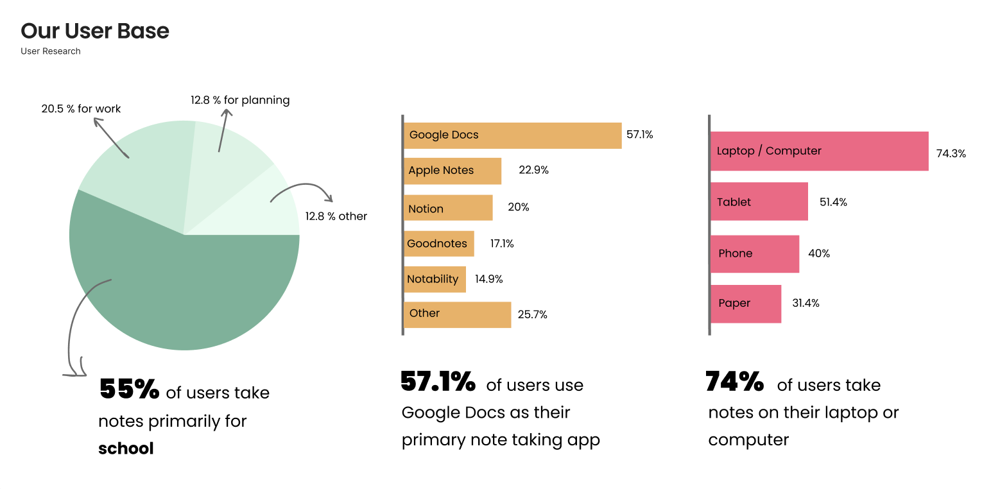
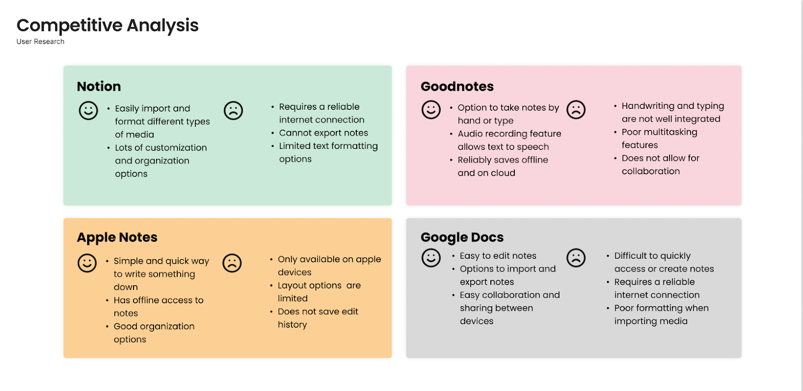
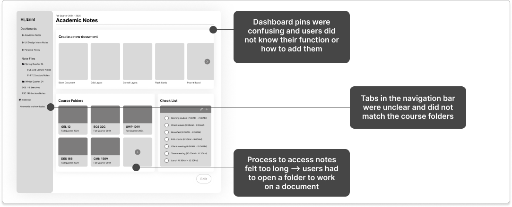
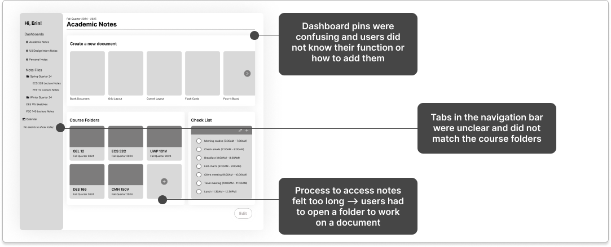

Noteable
Product Design
Timeline: September 2024 - December 2024
Tools: Figma, FigJam, User Testing, User Interviews
[CONTEXT]
As a designer in Design Interactive’s Fall 2024 Cohort, I worked with a team to design an original note taking app during a 7-week design sprint. Our product was motivated by the lack of an existing, flexible, and customizable note-taking application that caters to the diverse needs of users, such as for work, school, or day-to-day life. Our goal was to design a note-taking application that allows users to capture and organize their thoughts quickly and effortlessly, no matter where they are.
[ROLE]
As the only designer with a background in marketing and social science research, I played a crucial role in planning and executing user research. I optimized our research by carefully editing survey and user interview questions, and visualizing data to be readable for both technical and non-technical stakeholders.
How might we design a note-taking application that allows users to capture and organize their thoughts quickly and effortlessly, no matter where they are?
[RESEARCH]
Key Needs: Our application needed to have the ability to import a variety of media formats (such as photos, lecture slides, PDF’s), as well as customizable organization options, and be convenient and free to use.
Key Pain Points: A cluttered and distracting interface, poor media formatting options, and poor organizational customizability.
 [KEY INSIGHTS]
- Organization: Users want to organize their notes in a way that makes sense to them individually.
- Collaboration: Users want to easily communicate their notes with others—this mostly applies to professionals who wish to share timeframes of projects efficiently.
- Efficiency & Speed: Users want an easy, quick way to take and access notes.
[PROTOTYPING & FEEDBACK]
 

[SOLUTION]
Onboarding
- Create an account to save all your notes in one place
- Select a profile type for customization suggestions
- Select which features you want highlighted on your dashboard
- Keep your notes organized by creating a new dashboard
Adding Pins
- Customize your dashboard by adding new pins
- Choose between a variety of options to best suit your notetaking needs
Switching Dashboards
- Log in to access your notes
- Customizeable pins allow for easy access of important documents, such as flashcards
- Switch between dashboards using the left sidebar
- Each dashboard is customized to suit your different needs
Importing Text and Images
- Access folders of each dashboard using left sidebar
- Open existing documents in folders page
- Import image into document using Grid Edit Mode
- Format image next to text with a variety of layout grid options
Creating New Documents
- Switch between column view and list view to best suit your needs
- Click “Create a new document” to select either a blank document or an existing template
- By creating a flash card template, you can efficiently take notes on vocabulary and definitions
- Viewing mode for flash cards is authentic to studying with paper flash cards with the convenience of digital notes
Event & Task Calendars
- Access your calendars using the left sidebar
- Click on a time slot to schedule a new event
- Select a category to color code your events into groups
- Have multiple calendars to keep each area of your life organized
[REFLECTIONS]
Notable was one of five project teams participating in Design Interactive’s Fall 2024 Cohort. On Final Presentation Day, where all teams presented their work to a judging panel of UX Designers in industry, our team was recognized for standout Strategic Design and Communication.
Next Steps:
- Responsive to tablet and mobile views
- Dark mode, for further customization and accessibility

Thanks for reading!
View Additional Projects